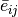
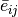

icepop package¶
Submodules¶
icepop.cell_proportion module¶
These are classes to process various cell population data. The cell population data include:
The above files are downloaded as public database.
It’s stored in proportion_data/ directory
See doctsring below for detailed explanation.
-
class
icepop.cell_proportion.ImmGen(immg_fn)[source]¶ These are classes to process ImmGen data. The default input is
ImmgenCons_all_celltypes_MicroarrayExp.csv. For each gene compute the weight of 10 cell types. Weight (in percentage) are the proportion of average gene expression of a given cell type over all cell types.>>> from icepop import cell_proportion as cellprop >>> ig = cellprop.ImmGen(igfile) >>> ig_weight_dict, ig_ctlist = ig.ComputePercentageWeight()
-
ComputeAverage()[source]¶ Note that, a given cell type may contain many subtypes (e.g. StemCells contains: SC_LT34F_BM, SC_LTSL_BM, SC_STSL_BM, SC_LTSL_FL,... etc). Here we compute the average of gene expression in the given cell type from its subtypes.
Let
 be the list of subtypes
be the list of subtypes  in celltype
in celltype  .
And is the expression of gene
.
And is the expression of gene  in
subtype . The average expression  is computed as
follows:
in
subtype . The average expression  is computed as
follows:
-
ComputeAverageByOrgans(weighted=False)[source]¶ Group by organs. Then average for for every cell type.
-
ComputePercentageWeight()[source]¶ After we obtain the average of cell types’ gene expression, here given a gene, we compute the weight of each gene in their respective cell type. Let be the expression of gene
in cell type .
The cell type weight for every gene is computed as follows:
-
-
class
icepop.cell_proportion.Iris(irisfn)[source]¶ These are classes to process IRIS data. The default input is
ImmgenCons_all_celltypes_MicroarrayExp.csvFor each gene compute the weight of K cell types. Weight (in percentage) are the proportion of average gene expression of a given cell type over all cell types.>>> from icepop import cell_proportion as cellprop >>> iris = cellprop.ImmGen(irisfile) >>> iris_weight_dict, iris_ctlist = iris.ComputePercentageWeight()
icepop.cellpop_score module¶
Functions for calculating cell population.
-
icepop.cellpop_score.deg_cellpopscore_df(cellpopdf=None, degdf=None, fclim=None, gene_count=False, logscale=False)[source]¶ Calculate the cell population score per sample. All done in Pandas data frame.
Parameters: - cellpopdf – Pandas data frame, cell population.
- degdf – Pandas data frame, differentially expressed genes (DEGs).
- fclim – float, foldchange lower limit thresold.
- logscale – boolean, transform fold change to logscale. This does not affect the result substansially.
- gene_count – boolean, normalization method. If True, divide by sum of product. The total weight will have to result to 1.00.
Returns: Score per cell population as data frame.
Usage:
>>> from icepop import cellpop_score as cp >>> cpop_score_df = cp.deg_cellpopscore_df(cellpop_df, indf, fclim=0, gene_count=False, logscale=False)
-
icepop.cellpop_score.deg_cellpopscore_generank(cellpopdf=None, degdf=None, fclim=None, gene_count=False, logscale=False, cpop_thres='median')[source]¶ Calculate the cell population score per sample. All done in Pandas data frame.
Parameters: - cellpopdf – Pandas data frame, cell population.
- degdf – Pandas data frame, differentially expressed genes (DEGs).
- fclim – float, foldchange lower limit thresold.
- logscale – boolean, transform fold change to logscale. This does not affect the result substansially.
- gene_count – boolean, normalization method. If True, divide by sum of product. The total weight will have to result to 1.00.
- cpop_thres – string(‘uniform’,’median’,’q1’), threshod to choose which cell population is induced. This threshold is for cell population score. It affects the cell type list to be reported. If uniform, we apply 1/(number of cell types).
Returns: Score per cell population as data frame.
Usage:
>>> from icepop import cellpop_score as cp >>> cpop_score_df = cp.deg_cellpopscore_df(cellpop_df, indf, fclim=0, gene_count=False, logscale=False)
-
icepop.cellpop_score.find_threshold(score_list, method=None)[source]¶ Given a list of values, calculate the median, median’s lower and upper neighbors. This is the cell type response threshold (CRT). Then return the standard deviation of the three values above.
-
icepop.cellpop_score.get_genebygene_fc_score_matrix_product(cellpop_df=None, sample_df=None, input_gene_count=None, filt_cellpop=None)[source]¶ Calculate product of FC with ImmGen/IRIS weight gene by gene.
Parameters: - cellpop_df – Pandas data frame, cell population.
- sample_df – Pandas data frame, sample fold change.
- gene_count – boolean, normalization method. If True,divide by sum of product. The total weight will have to result to 1.00.
- filt_cellpop – list of cell type that passed threshold.
Returns:
-
icepop.cellpop_score.get_population_values(cellpop_df=None, sample_df=None, input_gene_count=None)[source]¶ Here is where the actual calculation take place.
Parameters: - cellpop_df – Pandas data frame, cell population.
- sample_df – Pandas data frame, sample fold change.
- gene_count – boolean, normalization method. If True,divide by sum of product. The total weight will have to result to 1.00.
Returns: Pandas series, with score per cell population. If the output contains all zeros, it means the genes defined in
sample_dfis not included in ImmGen/IRIS database.
-
icepop.cellpop_score.merge_scorematrix_samplefc(cellpop_df=None, sample_df=None, input_gene_count=None)[source]¶ Merge Immgen/IRIS matrix with sample fold change data. It is possible that the gene list in sample does not exist at all in IRIS/ImmGen. In that case we return the data frames with 0 values.
Parameters: - cellpop_df – Pandas data frame, cell population.
- sample_df – Pandas data frame, sample fold change.
- gene_count – boolean, normalization method. If True,divide by sum of product. The total weight will have to result to 1.00.
Returns: Pandas series, merged data.
-
icepop.cellpop_score.sample_response_score(score_list, method=None)[source]¶ Given a list of values, calculate the sample response score (SR). It calls
find_threshold()function that calculates the cell type response score (CRT).
icepop.clock module¶
Timing decorator.
icepop.cluster_cellpop_score module¶
Here we take clustered genes (degdf), then
for each cluster compute cell population score.
-
icepop.cluster_cellpop_score.cluster_cellpop_score(cellpopdf=None, degdf=None, fclim=None, gene_count=False, logscale=False, k=None, method='ward', dist='euclidean')[source]¶ Parameters: - cellpopdf – Cell population data frame.
- degdf – DEGs data frame.
- fclim – float, foldchange lower limit thresold.
- logscale – boolean, transform fold change to logscale. This does not affect the result substansially.
- gene_count – boolean, normalization method. If True, divide by sum of product. The total weight will have to result to 1.00.
- method – string(‘complete’,’average’,’ward’)
- dist – string(‘euclidean’,’manhattan’,’pearsond’)
- k – integer, number of cluster
Returns: Pandas data frame that contains cell population scores for each cluster and clustered genes with ClusterID added.
Usage:
>>> from icepop import cluster_cellpop_score as ccp >>> fold_change_lim = 1.5 >>> nof_clust = 15 >>> full_clust_cpopdf, full_clust_degdf = >>> ccp.cluster_cellpop_score(cellpopdf=cellpop_df, >>> degdf=indf,fclim=fold_change_lim, >>> gene_count=False,logscale=False, k=nof_clust, method="ward", >>> dist="euclidean") >>> full_clust_cpopdf.to_csv("full_clust.tsv",sep=" ",index=False,float_format='%.3f')
icepop.clustering module¶
Perform clustering on genes. Later for each cluster we run cell population scoring.
-
icepop.clustering.cluster(degdf=None, k=20, fclim=None, method='complete', dist='euclidean')[source]¶ Clustering function. Derived from scikit-learn’s AgglomerativeClustering method.
Parameters: - degdf – DEGs data frame.
- method – string(‘complete’,’average’,’ward’).
- dist – string(‘euclidean’,’manhattan’,’pearsond’).
- k – integer, number of cluster.
Returns: A generator that list gene names for each cluster.
icepop.draw_cellpop module¶
-
icepop.draw_cellpop.bar_plot(indf, title=None, outfile=None, ymin=0, ymax=0.2, y_thres=None)[source]¶ Make barplot. All in one figure. Not very pretty. Based on Pandas method.
Parameters: - indf – cell population data frame.
- title – string.
- outfile – string (e.g. ‘plot.png’).
Returns: Histogram plot. Image file type is defined automatically from output file extension.
-
icepop.draw_cellpop.bar_plot_facet(indf, title=None, outfile=None)[source]¶ Make barplot in trellis (facet), using Seaborn. Each sample one figure.
Parameters: - indf – cell population data frame.
- title – string.
- outfile – string (e.g. ‘plot.png’).
Returns: Histogram plot facet. Image file type is defined automatically from output file extension.
Usage:
>>> from icepop import draw_cellpop as dc >>> outfile = "barplot.png" >>> dc.bar_plot_facet(cpop_score_df, outfile=outfile)
-
icepop.draw_cellpop.cellpop_cluster_heatmap(cellpop_clust_df, fig_width=5.25, fig_height=10.25, title=None, outfile=None)[source]¶ Make heatmap for cell population clusters, using Seaborn.
Parameters: - cellpop_clust_df – cell population cluster data frame.
- title – string
- outfile – string (e.g. ‘plot.png’).
Returns: Heatmap, with cluster number as y-axis and cell population as x-axis. Image file type is defined automatically from output file extension.
Usage:
>>> from icepop import draw_cellpop as dc >>> dc.cellpop_cluster_heatmap(full_clust_cpopdf, outfile="heatmap.png")
icepop.enumerate_output module¶
Given a fold change threshold, we enumerate all the answers, per sample. The output later will be used for JavaScript processing at the fron end.
-
icepop.enumerate_output.enumerate_geneclust_go_output(cellpopdf, degdf, gene_count=False, outfilename=None, k=None, logscale=None, fc_range=None, method='ward', dist='euclidean', species=None, pvalim=1, cormeth=None, immune=True, verbose=False, tsv=False)[source]¶ Enumerate all the gene cluster cell population score given the range of fold change threshold. This file output is later to be used to make JavaScript rendering, modeled according to:
Parameters: - cellpopdf – Cell population data frame.
- degdf – DEGs data frame.
- fc_range – list of floats, range of fold change
- logscale – boolean, transform fold change to logscale. This does not affect the result substansially.
- gene_count – boolean, normalization method. If ‘True’, divide by sum of product. The total weight will have to result to 1.00.
- outfilename – output filename. The output type depends on the extension. They are (”.json”, ”.tsv”)
- method – string(‘complete’,’average’,’ward’)
- dist – string(‘euclidean’,’manhattan’,’pearsond’)
- k – integer, number of cluster
- gene_ontology – boolean, whether or not to run GO.
The following parameters only take effect when gene_ontology is set to true.
Parameters: - species – string(‘mouse’,’human’,’rat’)
- useSymbol – string(‘true’,’false’), whether query is done using gene symbol, otherwise ProbeID
- pvalim – string, lowerbound of P-value for a GO term to be displayed.
- cormeth – string(‘HOLM_BONFERRONI’,’BENJAMINI_HOCHBERG’,’BONFERRONI’)
- immune – boolean, show only immune related GO terms.
- verbose – boolean, display processing stage.
Returns: JSON format output for both GO as list of list.
Usage:
>>> from icepop import enumerate_output as eo >>> out_go_json = "input_cluster_type1_degs.large.go.json" >>> eo.enumerate_geneclust_go_output(cellpop_df, indf, >>> fc_range=foldchange_range, outfilename = out_go_json, >>> gene_count=True, logscale=False,k=nof_clust, method="ward", >>> dist="euclidean", >>> species='mouse',pvalim=1.00,cormeth="HOLM_BONFERRONI",immune=True)
-
icepop.enumerate_output.enumerate_geneclust_output(cellpopdf, degdf, gene_count=False, outfilename=None, k=None, logscale=None, fc_range=None, method='ward', dist='euclidean')[source]¶ Enumerate all the gene cluster cell population score given the range of fold change threshold.
Parameters: - cellpopdf – Cell population data frame.
- degdf – DEGs data frame.
- fc_range – list of floats, range of fold change
- logscale – boolean, transform fold change to logscale. This does not affect the result substansially.
- gene_count – boolean, normalization method. If ‘True’, divide by sum of product. The total weight will have to result to 1.00.
- outfilename – output filename.
- method – string(‘complete’,’average’,’ward’)
- dist – string(‘euclidean’,’manhattan’,’pearsond’)
- k – integer, number of cluster
Returns: JSON format output for both cell population.
Usage:
>>> from icepop import enumerate_output as eo >>> out_json = "input_cluster_type1_degs.large.json" >>> nof_clust = 15 >>> foldchange_range = [1.5,2,2.5,3,3.5,4,4.5,5] >>> eo.enumerate_geneclust_output(cellpop_df, indf, >>> fc_range=foldchange_range, outfilename = out_json, >>> gene_count=True, logscale=False,k=nof_clust, method="ward", >>> dist="euclidean")
-
icepop.enumerate_output.enumerate_output(cellpopdf, degdf, gene_count=False, outfilename=None, logscale=None, fc_range=None)[source]¶ Enumerate all the cell population score given the range of fold change threshold.
Parameters: - cellpopdf – Cell population data frame.
- degdf – DEGs data frame.
- fc_range – list of floats, range of fold change
- logscale – boolean, transform fold change to logscale. This does not affect the result substansially.
- gene_count – boolean, normalization method. If ‘True’, divide by sum of product. The total weight will have to result to 1.00.
- outfilename – output filename.
Returns: JSON format output.
Usage:
>>> from icepop import enumerate_output as eo >>> foldchange_range =[1.5,2,2.5,3,3.5,4,4.5,5] >>> out_json = "input_type1_degs.large.json" >>> eo.enumerate_output(cellpop_df, indf, fc_range = foldchange_range, outfilename = out_json, gene_count=True, logscale=False)
icepop.geo module¶
Stores method to parse the GEO file in various formats. These functions are inherited from GEOparse package.
-
icepop.geo.accumulate(handle=None, type='gsm', anncol='Gene Symbol', gpl_id=None)[source]¶ Instead of iterating content of GEO object, we return one single Data frame with combined GSMs.
Parameters: - handle – a GSE handler.
- anncol – string, annotation column. Derived from GPL class.
- type – string, iterator type.
- gpl_id – int, index of GPL id you want to return.
Returns: Data frame from multiple GSMs name and expression values data frame. Probe names and gene symbols are included.
Usage:
>>> full_df = geo.accumulate(handle=gse,type="gsm",anncol="Gene Symbol")
-
icepop.geo.get_gpl(handle=None, id=None)[source]¶ A function to return meta data from the given GSE object.
:param id:int, List id of which you want to return the GPL.
-
icepop.geo.iterate(handle=None, type='gsm', anncol='Gene Symbol')[source]¶ Functions to iterate content of GEO object.
Parameters: - handle – a GSE handler.
- type – string, iterator type.
- anncol – string, annotation column. Derived from GPL class.
Returns: Iterator that holds GSM name and expression values data frame. Probe names and gene symbols are included.
Usage:
>>> for gsm_name, gsm_df in geo.iterate_gsm(handle=gse): >>> print gsm_name >>> print gsm_df.head()
-
icepop.geo.load(geoid=None, destdir=None, filepath=None)[source]¶ Function to download GEO file in SOFT format.
Parameters: - geo – string, GEO id (e.g. “GSE69886”)
- destdir – string, destination to store the files.
Usage:
>>> from icepop import geo >>> gse = geo.load(geoid="GSE74306", destdir="./")
or if the data is already downloaded
>>> gse = geo.load(filepath="./GSE74306.soft.gz")
icepop.input_reader module¶
Functions to read input with various format:
- DEG (fold change)
- RAW expression data from GEO format.
-
icepop.input_reader.load_hdf_cvfilter()[source]¶ Reading HDF file that contain gene list and the corresponding CV filter, for the given organ. Calculated using BARCODE 3.0 .
-
icepop.input_reader.read_file(infile, mode='DEG')[source]¶ Reading various input file. Supported format are tab delimited (TSV), comma delimited (CSV), Excel (.xlsx or .xls).
Parameters: mode – string(‘DEG’,’RAW’). DEG (default) is in fold change format, RAW in GEO format of raw expression values. Returns: Pandas data frame. Usage:
>>> from icepop import input_reader as ir >>> deg_infile = "input_type1_degs.tsv" >>> indf = ir.read_file(deg_infile, mode="DEG")
-
icepop.input_reader.read_hdf(species=None, organs=False)[source]¶ HDF reading is faster than pickle. Here given the species, return the weighted proportion as dataframe.
Parameters: species – species, used to indicate the h5 file. Returns: Pandas data frame.
-
icepop.input_reader.read_hdf_expr(species=None, organs=False)[source]¶ Here given the species, return the weighted expression for each celltypes as dataframe.
Parameters: species – species, used to indicate the h5 file. Returns: Pandas data frame.
-
icepop.input_reader.read_hdf_from_file(infile=None)[source]¶ HDF reading from input file.
Parameters: infile – A HDF file, usually from ImmGen/IRIS proportion. Made by serialize_cell_proportion.py.
-
icepop.input_reader.read_immgen_hdf_pheno()[source]¶ Used for reading only phenotype granularity type of ImmGen data. It returns two data frames: 1) scoring matrix; 2) phenotype celltype correspondence.
icepop.serialize_cell_proportion module¶
This code is only to be used once. It creates Pickle or HDF5 format files. So that faster loading of data structure can be made.
-
icepop.serialize_cell_proportion.main()[source]¶ Make the actual HDF files for both ImmGen and IRIS.
-
icepop.serialize_cell_proportion.make_immgen_expr(out_type='HDF5', group_by='organs')[source]¶ Make the persistent files for ImmGen. We implement only for HDF5 as Pandas table But here we just use expression without weighting them.
-
icepop.serialize_cell_proportion.make_immgen_expr_cpop_phendict(out_type='HDF5')[source]¶ From original file, we create a HDF5 that list all the cell population and phenotype as data frame
-
icepop.serialize_cell_proportion.make_immgen_expr_phenotype(out_type='HDF5')[source]¶ Obtain gene expression without summarizing, i.e. include all phenotypes.
-
icepop.serialize_cell_proportion.make_immgen_specificity(species='mouse', method='sparseness', to_exclude=['gdTCells'])[source]¶ Make specificity file in HDF5. The data structure is mouse.
-
icepop.serialize_cell_proportion.make_immgen_weight(out_type='HDF5', group_by=None)[source]¶ Make the persistent files for ImmGen. Now we implement for HDF5 as Pandas table and Pickle as nested dictionary.
-
icepop.serialize_cell_proportion.make_iris(out_type='HDF5')[source]¶ Make the persistent files for IRIS. Now we implement for HDF5 as Pandas table and Pickle as nested dictionary.
-
icepop.serialize_cell_proportion.make_iris_expr(out_type='HDF5')[source]¶ Make the persistent files for IRIS. Now we implement for HDF5 as Pandas table and Pickle as nested dictionary.
icepop.species_cell_proportion module¶
This modules has interface to let user
choose which species they want. And return
the cell population weight accordingly.
Additional option include choosing between
Pandas dataframe or standard nested dictionary.
It behaves as the extension of cell_proportion module.
-
icepop.species_cell_proportion.choose_organ(cp_organ_df, organ_name)[source]¶ Description of choose_organ
-
icepop.species_cell_proportion.get_pheno_prop_immgen()[source]¶ Similar with the output generated by scp.get_prop(). It returns cell type proportion, but at phenotype level. Also returns a table that list the phenotype correspondence with cell type and organ.
Specifically for ImmGen only.
-
icepop.species_cell_proportion.get_pheno_prop_iris()[source]¶ Similar with the output generated by scp.get_prop(). It returns cell type proportion, but at phenotype level. Also returns a table that list the phenotype correspondence with cell type and organ.
Specifically for IRIS only.
-
icepop.species_cell_proportion.get_prop(species='mouse', mode='')[source]¶ Get cell type proportion.
Parameters: - species – string(‘mouse’,’human’) mouse (default) obtained from ImmGen database and human from IRIS.
- mode – string(‘pandas_df’,’dict’)
Returns: function to read persistence file.
Usage:
>>> from icepop import species_cell_proportion as scp >>> cellpop_df = scp.get_prop(species="mouse",mode="pandas_df")
icepop.specificity module¶
Various function to calculate specificity score of every gene in proportion data (ImmGen/IRIS)
-
icepop.specificity.assign_specificity_score(df, method='sparseness')[source]¶ Assign specificity score to the ImmGen/IRIS data. :param df: Pandas data frame, generally proportion file. :param method: str(“sparseness”,”js”)
Returns: a Panda data frame with where every genes will have its specificity score.
-
icepop.specificity.bind_sparseness_score(indf=None)[source]¶ Given a Pandas data frame with genes as row and column of cell types or samples append sparseness score at the end
Indf: Pandas data frame. Returns: Pandas data frame with appended sparseness score.
-
icepop.specificity.condn_thres_mat(df, method='sparseness', verbose=False)[source]¶ Function to enumerate condition number from series of thresholds.
Parameters: df – Pandas data frame, generally proportion file. Returns: numpy (3 x 2) matrix, which stores list of threshold, condition number and number of markers.
-
icepop.specificity.find_best_marker_genes(df, method='sparseness', verbose=False)[source]¶ We use condition number to choose the best specificity threshold.
Parameters: - df – Pandas data frame, generally proportion file.
- method – str(“sparseness”,”js”)
- verbose – boolean
Returns: a Panda data frame with selected marker genes.
-
icepop.specificity.find_marker_genes(df, method='sparseness', lim=0.8)[source]¶ Find marker genes from expression cell population by some specificity score.
Parameters: - df – Pandas data frame, generally proportion file.
- method – str(“sparseness”,”js”)
- lim – float, threshold to select
-
icepop.specificity.find_topk_marker_genes(df, method='sparseness', to_exclude=None, lim=0.8, top_k=1)[source]¶ Find marker genes from expression cell population by some specificity score. Then select to 10 genes, one gene which is most specific in one cell type.
Parameters: - df – Pandas data frame, generally proportion file.
- to_exclude – list of cell type to exclude. If None, average between abTcell and gdTcell will be performed.
- method – str(“sparseness”,”js”)
Returns: a Panda data frame with selected marker genes.
-
icepop.specificity.jsd_vectorized(xs=None)[source]¶ Using Jensen-Shannon distance calculate the specificity score of every gene with respect to the cell type.
Parameters: xs – Numpy matrix, which contain list of expression from all cell types. Returns: Numpy array (1D), value with sparsity scores for every genes.
-
icepop.specificity.normalize(dfv=None)[source]¶ Normalize every row.
Parameters: dfv – Numpy matrix. Returns: Numpy matrix, with normalize score.
-
icepop.specificity.sparseness(xs=None)[source]¶ A function to calculate sparseness score of a given gene. The value range from 0 to 1. Score 1 means that the gene is perfectly expressed in one cell type. Calcuated the following way (Hoyer 2004):
Here
 refers to the number of cell types and
refers to the number of cell types and  expression of a gene in cell type .
expression of a gene in cell type .Parameters: xs – Numpy matrix, which contain list of expression from all cell types. Returns: Numpy array (1D), value with sparsity scores for every genes.
icepop.targetmine_query_urllib module¶
Programmatic way to do GO analysis. It uses TargetMine.
-
icepop.targetmine_query_urllib.get_tgm_data(genelist_string, species='mouse', immune=True, useSymbol='true', pvalim='1.00', cormeth='HOLM_BONFERRONI')[source]¶ Get GO enrichment given list of genes.
Parameters: - genelist_string – string, comma separated (e.g. “Ssb,Eny2,Hsp90b1,Ube3a,Cry1,Prkaa1”).
- species – string(‘mouse’,’human’,’rat’).
- useSymbol – string(‘true’,’false’), whether query is done using gene symbol, otherwise ProbeID.
- pvalim – string(‘1.00’,‘0.01’), lowerbound of P-value for a GO term to be displayed.
- cormeth – string(‘HOLM_BONFERRONI’,’BENJAMINI_HOCHBERG’,’BONFERRONI’)
- immune – boolean, show only immune related GO terms.
Returns: Generator for GO with enrichment Pvalues
Module contents¶
This is a package for estimating immune cell population from differentially expressed genes.